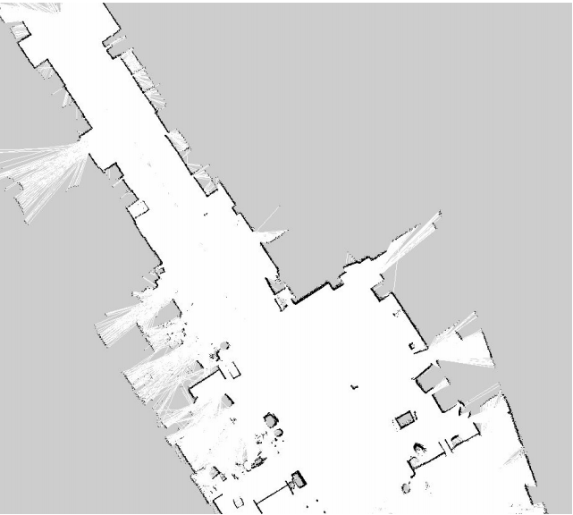

UXV Recording
Relations to Other Scenarios
- Risk Management focus spots UXV Recording
- Topic Management focus spots UXV Recording
Relations from Other Scenarios
- UXV Recording observations Digital Reconstruction
Summary🔗
This scenario concerns the recording of the construction site by the UXVS.
Models🔗
UXVs🔗
This model captures the list of available UXVS including the details such as available sensors.
Definitions🔗
UXV🔗
This is an unmanned vehicle (both aerial, UAV, and ground, UGV) recording the environment.machine
spatial accuracy🔗
The spatial accuracy indicates the error between the measurement and the physical world in terms of space.
It is defined as a scalar and associated with a unit.
For example, "3mm".
(We have to see during the implementation whether the accuracy refers to one sigma, two sigma etc.)
sensor🔗
A sensor is a device mounted on a UXV used to record the environment.device
Each sensor has a unique identifier.
The spatial accuracy of the sensor is also defined.
The sensor specs live in sensors.
reference point🔗
A reference point is a point for which we know with certainty the position in site coordinate system (from evolving_plan) and in the UXV frame.
It is important that the reference point is measured with the highest precision possible as the remainder of the system will rely on it.site
marker🔗
Markers are specific objects (e.g., a printed picture glued to a wall or a floor) representing a specific reference point.
localization🔗
This is the process of determining the position of the UXV in terms of UXV frame.machine
Note that the UXV frame is defined at the beginning of the recording (from digital_reconstruction). This is not necessarily the site coordinate system (from evolving_plan), but the observed points need to be consistent to UXV frame.
coordinate conversion🔗
This is the conversion of points (from digital_reconstruction) and images (from digital_reconstruction) by mapping from UXV frame to the site coordinate system (from evolving_plan) based on observations of the reference points.
For example, the UXV needs to observe reference points and infer the mapping between the same reference point in UXV frame and site coordinate system (from evolving_plan).
Note that this conversion is not referring to geo-coordinates (e.g., global world coordinates), but the conversion between UXV frame and site coordinate system (from evolving_plan). This confusion often comes up in the discussion with the construction engineers.
operator🔗
This is a person operating the UXV for the safety reasons.
If something goes wrong, the operator is supposed to take over.
point of interest🔗
The point of interest is a point in site coordinate system (from evolving_plan) that needs to be particularly recorded.
The point of interest can include the field of view.
object of interest🔗
The object of interest that requires a special focus during the recording (from digital_reconstruction).
The object of interest can include the field of view. If the field of view is not defined, the field of view needs to be automatically inferred by the UXV.
volume of interest🔗
The volume of interest is a cube defined in site coordinate system (from evolving_plan) that we want an UXV to explore.
This helps the navigation of the UXV so that it can plan the trajectory.
For example, define the important zones such as rooms or floors.
This is different to point of interest in way that the robot just records everything in the volume of interest without any specific focus.
mission🔗
A mission is an execution of a recording (from digital_reconstruction) based on a specific UXV and given the list of volumes of interest.
The mission is also given the start time point and an optional end time point.
The sensors need to be specified per a volume of interest.
For each volume of interest, we specify the length the recording (e.g., record this point for 30 seconds).
live streaming🔗
A live streaming is a real-time transmission of the sensor data to the station.
navigation map🔗
The navigation map is a 2D representation of the environment.
It is recorded by the navigation tools of the UXV (which are not necessarily the same tools used for the recording!).
The navigation map is taken care of by the robot system (include the station), not by the BIMprove backend.
Here is an example of a navigation map visualized as an image:
focus spot🔗
A focus spot is a structured topic (from topic_management) signaling to the operator what relevant spots in the construction sites need to be recorded.
For example, this can be a particular spot that the risk manager (from risk_management) needs to have examined.
The necessary sensors need to be indicated in the comments (from topic_management). For example, it can be that we need photo cameras, very precise lasers and/or thermal camera.
(We have to see in the implementation if the comments (from topic_management) should be free form or structured.)
Scenario🔗
As-observed🔗
Process.
- UXV needs to perform the localization.
- The mission is specified by the operator
- UXV drives or flies around and records the data.
- The data is sent to the station.
- The station post-processes the data (e.g., reconstructs the images to point clouds if necessary, and perform the coordinate conversion).
- The station sends the post-processed data to the backend.
Route planning. There is always an operator supervising the recording (from digital_reconstruction).
Users indicate indicate in the system which elements or positions need to be recorded in the bim3d (from evolving_plan) through focus spots.
For example, a bimmer (from digital_reconstruction) can specify parts of the site that need special attention or a risk manager (from risk_management) can request a recording of a specific dangerous spot.
Mind that these focus spots are a bit more abstract than point of interest. We assume that the operator has much better skills to define fine-grained points. Hence the general users describe through focus spots what they want to have recorded, while the operator plans the mission in more detail according to these focus spots.
siteThe operator selects the available UXV from UXVs and defines a mission.machine
The mission is defined by specifying:
- points of interest,
- volumes of interest,
- objects of interest,
- assigning the sensors to these points,
- time allocation etc.
The UXV is supposed to automatically navigate the mission based on the navigation map. The navigation map does not rely on bim3d (from evolving_plan) as it might not be trustworthy. Instead, the navigation map is inferred from the as-built (from digital_reconstruction).
machine(Note that the navigation based on as-built (from digital_reconstruction) is still experimental. If this navigation does not work automatically, the operator is going to drive manually the robot in order to obtain the navigation map using the station.)
There are two applications: one for specifying the mission (and managing the UXVS)site and another one for operating the missionmachine.
The missions are defined using the backend, while the operation of the mission is performed on the station.
The station needs to obtain the data from the backend.
The other aspect sections intentionally left empty.
Safety🔗
Protection from the UXV. If the mission can not be automatically accomplished, the operator needs to take over and finish the recording manually.
For example, the obstacles are automatically detected by the sensors and the operator is notified. A common example is that there might be a door closed and the UXV can not continue.
Live supervision. In certain construction scenarios, the building operation needs to be supervised live.
If the bandwidth allows, the UXV can be manually navigated by the operator to the relevant point of view and the streamed data is displayed on the station.
Please mind the strong limitations:
- bandwidth limit,
- short battery life (~20 minutes!), and
- safety issues (as UXV floats around the people).
Mind that this is a very special nice-to-have use case for UXV and is not in the main focus of the BIMprove project.
The other aspect sections intentionally left empty.
Test cases🔗
We are continuously experimenting with UXVS in our labs.
There will be unstructured free-form tests on the construction site.
Acceptance criteria🔗
accuracy🔗
We expect the accuracy errors to be in the range of centimeters.
In some parts we won't be able to provide this accuracy. One issue are the outliers, but there are also systematic sources of errors.
We still need to figure out the actual accuracy in the field.
It would good if we could include the uncertainty in the data. Unfortunately, the external software does not support it.
We do not have precise statistics at the moment (2021-01-22).